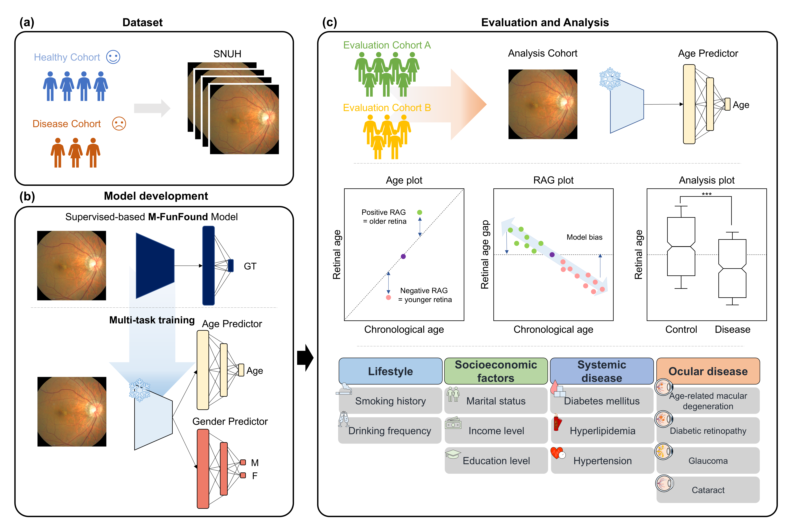

Deep Learning–Derived Retinal Age Gap and Its Associations with Lifestyle, Systemic, and Ocular Health in a Health Screening Cohort
GeroScience 2026 GeroScience
Accepted

Ph.D. Candidate in Bioengineering, Seoul National University
Medical Artificial Intelligence · Imaging Biomarkers · Domain Shift · Clinical Translation
My research focuses on building medical AI systems that work in real clinical settings. Working closely with clinicians at Seoul National University Hospital, I aim to develop models that remain clinically meaningful, reliable, and useful beyond retrospective benchmarks.
Developing AI models for diverse medical imaging applications in close collaboration with clinicians.
Studied basal ganglia circuits and motor control through in vivo optogenetics, behavioral experiments, and fluorescence imaging.
Advisors: Prof. Jin-Wook Choi, and Prof. Young-Gon Kim

GeroScience 2026 GeroScience


 AI-Generated
AI-Generated
JKNS 2026 Journal of Korean Neurosurgical Society, 69(3):329–337


npj Digit Med 2025 npj Digital Medicine, 8:607

Annals ATS 2024 Annals of the American Thoracic Society, 21(2):211–217

† Co-first author. These authors contributed equally.